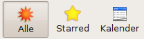

Chandler
Archivierte Anleitung
Dieser Artikel wurde archiviert, da er - oder Teile daraus - nur noch unter einer älteren Ubuntu-Version nutzbar ist. Diese Anleitung wird vom Wiki-Team weder auf Richtigkeit überprüft noch anderweitig gepflegt. Zusätzlich wurde der Artikel für weitere Änderungen gesperrt.
Zum Verständnis dieses Artikels sind folgende Seiten hilfreich:
Der Chandler Desktop Client ist ein Teil des Chandler Project  der Open Source Applications Foundation. Der Client (im Folgenden kurz als Chandler bezeichnet) kann nicht nur als persönliches Planungswerkzeug eingesetzt werden, sondern ist auf Grund seiner Peer-To-Peer Funktionalität besonders auch für kleinere Benutzergruppen von 2-30 Personen geeignet. Allerdings gibt es für letzteren Anwendungszweck inzwischen auch entsprechende Groupware-Lösungen. Integriert ist die Unterstützung von iCalendar, CalDAV und WebDAV.
der Open Source Applications Foundation. Der Client (im Folgenden kurz als Chandler bezeichnet) kann nicht nur als persönliches Planungswerkzeug eingesetzt werden, sondern ist auf Grund seiner Peer-To-Peer Funktionalität besonders auch für kleinere Benutzergruppen von 2-30 Personen geeignet. Allerdings gibt es für letzteren Anwendungszweck inzwischen auch entsprechende Groupware-Lösungen. Integriert ist die Unterstützung von iCalendar, CalDAV und WebDAV.
Chandler setzt die Selbstmanagement-Methode Getting Things Done (GTD) für den Alltag von Wissensarbeitern um. Damit ist der Einstieg im Vergleich zu etablierten PIM-Anwendungen wie Evolution, Kontact oder Thunderbird mit der Erweiterung Lightning relativ schwer, da sich die dahinter stehenden Konzepte nicht zwangsläufig und intuitiv erschließen.
Echte Vorteile des Programms sind aber seine Plattformunabhängigkeit (Linux, Windows, Mac OS X) und seine Synchronisationsmöglichkeiten mittels des öffentlichen Servers ("Chandler Hub"). Die dahinter stehende Serverkomponente ("Cosmo") kann auch auf einem eigenen Server eingesetzt werden. Chandler steht unter der Open Source Lizenz Apache 2.0 .
Noch ein wichtiger Punkt vorne weg: ein Ausdruck von Notizen, Terminen, Kalendern (einzige Ausnahme: Monatskalender) oder ToDo-Listen ist nicht möglich. Positiv ausgedrückt: Chandler rettet Bäume... Hintergrund: das Programm wurde im Kontext einer ständig verfügbaren Internetanbindung entwickelt. Obwohl Nutzer sich des öfteren verbesserte Druckmöglichkeiten wünschen, scheint es dafür derzeit keine Entwicklerkapazitäten zu geben.
Mit Archiv/Spicebird existiert ein vom Funktionsumfang her ähnliches Programm, das aber bisher nicht über das Beta-Stadium hinausgekommen ist. Eher könnte noch Tracks - Doing Things Properly interessant sein.
Installation¶
Das Programm ist nicht in den offiziellen Paketquellen vorhanden.
Fremdpakete¶
Das Chandler Project stellt für Ubuntu 8.04 und 8.10 fertige .deb-Pakete  bereit (auch 64-Bit). Für Ubuntu 9.04 wird aufgrund eines Problems mit Python 2.6/OpenJDK ein spezielles Paket benötigt. Ein zur eigenen Ubuntu-Version passendes Paket muss heruntergeladen und installiert [1] werden. Erforderliche Paketabhängigkeiten werden hierbei automatisch aufgelöst und gegebenenfalls nachinstalliert (die nachfolgende Liste dient nur der Information!).
bereit (auch 64-Bit). Für Ubuntu 9.04 wird aufgrund eines Problems mit Python 2.6/OpenJDK ein spezielles Paket benötigt. Ein zur eigenen Ubuntu-Version passendes Paket muss heruntergeladen und installiert [1] werden. Erforderliche Paketabhängigkeiten werden hierbei automatisch aufgelöst und gegebenenfalls nachinstalliert (die nachfolgende Liste dient nur der Information!).
Paketliste zum Kopieren:
sudo apt-get install rhino libaccess-bridge-java openjdk-6-jre-lib openjdk-6-jre-headless openjdk-6-jre python-configobj python-dateutil python-m2crypto python-parsedatetime python-pkg-resources python-pyicu python-setuptools python-vobject
sudo aptitude install rhino libaccess-bridge-java openjdk-6-jre-lib openjdk-6-jre-headless openjdk-6-jre python-configobj python-dateutil python-m2crypto python-parsedatetime python-pkg-resources python-pyicu python-setuptools python-vobject
Hinweis!
Fremdpakete können das System gefährden.
Anschließend findet man Chandler in GNOME und Xfce unter
"Anwendungen -> Büro -> Chandler"
bzw. in KDE unter
"K-Menü -> Büroanwendungen -> Chandler"
Manuell¶
Mittels der Archivdatei Chandler_linux_1.0.3.tar.gz (ca. 50 MB) kann auch eine Version inkl. Python und Java genutzt werden, die einfach nur entpackt [2] werden muss (beispielsweise ins eigene Homeverzeichnis). Zum Entpacken werden ca. 200 MB freier Speicher auf der Festplatte benötigt.
Ein Menüeintrag wird nicht angelegt. Das kann bei Bedarf manuell nachgeholt werden [3]. Als Startbefehl dient das Shell-Skript chandler (die Option "Befehl in einem Terminalfenster ausführen" aktivieren!). Ein passendes Symbol ist im Installationsordner unter Chandler.egg-info/resources/images/Logos/ zu finden.
Das Programm kann aber auch ohne Programm-Starter mit dem folgenden Befehl:
./chandler
in einem Terminal [4] ausgeführt werden [5]. Zur Deinstallation reicht es aus, den beim Entpacken erstellten Ordner zu löschen. Benutzerdaten werden im versteckten Ordner ~/.chandler abgelegt. Daher kann auch dieser Ordner bei Bedarf entfernt werden.
Konfiguration¶
Sprache¶
Chandler ist mehrsprachig und auch in Deutsch verfügbar. Die Auswahl der Sprache erfolgt automatisch, kann bei Bedarf aber über "Datei -> Sprache wechseln" geändert werden. Einige Begriffe sind bisher nicht (oder falsch) übersetzt, so steht z.B. der Begriff "Starred" schlicht und einfach für markierte Elemente bzw. dient zu deren Hervorhebung. Bei Problemen mit den nicht übersetzten Begriffen können Wörterbücher weiterhelfen.
E-Mail¶
Die Anbindung via E-Mail in Chandler beschränkt sich auf das Allernotwendigste zur Kommunikation mit Team-Mitgliedern und soll weder einen separaten E-Mail Client noch ein eigenständiges Adressbuch ersetzen. Während Nachrichten von einem externen IMAP-Konto gelesen bzw. importiert werden können, erfolgt der Versand von Nachrichten via SMTP. Ein IMAP-Schreibzugriff ist (bisher) nicht möglich.
Zum Import von einem IMAP-Konto verwendet Chandler drei spezielle (Unter-)Ordner:
Chandler Events
Chandler Mailbox
Chandler Starred
Aufgrund der rudimentären Fähigkeiten werden nur reine Textnachrichten versandt, Rich Text-/HTML-formatierte E-Mails sind nicht vorgesehen. Die Konfiguration erfolgt unter "Datei -> Konten...", jeweils getrennt für "ausgehende Post" (SMTP) und "eingehende Mail" (IMAP) (siehe auch Chapter 2: Setting Up Accounts im Chandler Get Started Guide).
Chandler Hub¶
Zur Nutzung des Chandler Hub muss dort zuerst ein kostenloses Konto eingerichtet werden (Lizenzbedingungen ). Benutzername und Passwort werden anschließend unter "Datei -> Konten... -> gemeinsamer Chandler Hub" eingetragen und mit der Schaltfläche "Test" überprüft. Nun kann der Chandler Hub auf mehrere Arten genutzt werden:
Online-Verwaltung von Notizen, Aufgaben und Kalender
Sicherung lokaler Daten
Synchronisation mehrerer Rechner/Geräte
gemeinsame Nutzung ("Sharing")
Letztendlich ist der Chandler Hub nur ein öffentlich zugänglicher Chandler Server ("Cosmo") . Bei Bedarf kann auch ein eigener Server eingerichtet werden. Auf den Hub bzw. Server kann auch mit anderen Programmen oder Geräten zugegriffen werden.
Hinweis:
Vor der (gewerblichen oder beruflichen) Nutzung von Chandler Hub sollte intensiv geprüft werden, inwieweit man bereit ist, seine persönlichen Aufzeichnungen und Notizen einem externen Dienstleister anzuvertrauen! Die Gefahr der missbräuchlichen Nutzung bzw. der Diebstahl eigener Daten ist bei dieser Art der Datenspeicherung prinzipiell immer vorhanden.
Benutzung¶
Beim ersten Start wird - wenn eine Verbindung zum Internet besteht - eine Webseite geöffnet, die eine Einführung in das Programm bereit hält. Anschließend erhält man eine dreispaltige Ansicht. In der linken Spalte befinden sich die Hauptübersicht, die Mailbox, ein Papierkorb, thematische Listen und eine Monatsübersicht. In der Mitte - je nach Auswahl von "Alle", "Starred" oder "Kalender" in der Symbolleiste - eine Übersicht der eigenen Notizen, Termine und Aufgaben. In der rechten Spalte werden jeweils die Details eines ausgewählten Eintrags angezeigt bzw. konfiguriert.
Chandler bringt etliche Beispieldaten mit. Um diese zu entfernen, den entsprechenden Eintrag in der linken Spalte mit der rechten Maustaste ( ) anklicken und "löschen". Allerdings enthalten diese Beispieldaten - gerade in der Einstiegsphase - auch viele nützliche Hinweise zum Umgang mit dem Programm. Alternativ können diese daher mit "aus der Hauptübersicht entfernen" nur ausgeblendet werden.
) anklicken und "löschen". Allerdings enthalten diese Beispieldaten - gerade in der Einstiegsphase - auch viele nützliche Hinweise zum Umgang mit dem Programm. Alternativ können diese daher mit "aus der Hauptübersicht entfernen" nur ausgeblendet werden.
Konzept¶
Der Zugang zu Chandler wird erleichtert, wenn man sich eine Notiz als zentrales Element vorstellt. Diese Notiz kann nun mit zusätzlichen Merkmalen wie Bearbeitungsstand, Erinnerungsfunktion, Versand an andere Nutzer usw. ausgestattet werden. Fast analog verhalten sich Ereignisse, die zusätzlich mit Daten zur Wiedervorlage versehen werden können.
Alle diese Elemente werden nun innerhalb eines Kalenders organisiert. Ein zusätzliches Hilfsmittel sind Listen (Sammlungen, collections), die projektbezogene Aufgaben bündeln.
Erste Schritte¶
Nach der Theorie etwas Praxis. Um sich etwas mehr Überblick zu verschaffen, werden als erstes die drei Beispiellisten "Beruf", "Privat" und "Spaß" ausgeblendet (siehe oben). Dann eine externe Kalenderdatei einbinden, z.B. eine Übersicht der Feiertage (siehe Kalender). Ebenfalls in der linken Spalte nun mit dem Kontextmenü () eine "Neue Übersicht" anlegen, via Doppelklick links in "Testeinträge" umbenennen und je nach Geschmack entsprechend einfärben.
Wenn man nun oben in der Symbolleiste eine neue Notiz anlegt (ein Titel und ⏎ reichen aus), erscheint diese Notiz automatisch in der vorher aktivierten Liste (in diesem Fall also "Testeinträge") und in der Hauptübersicht. In der rechten Spalte kann jetzt Text eingegeben werden und bei Bedarf ein "Alarm" definiert werden.
Oberhalb des Textfeldes befinden sich verschiedene Schaltflächen, mit denen man weitere Details zur Notiz angeben kann:
Status: "Jetzt", "Später" oder "Fertig"
Sternchen bzw. Merker setzen oder entfernen
Adresseintrag: zum Versand an andere Nutzer
dem Kalender hinzufügen oder entfernen
die Notiz (zur einfacheren Bearbeitung) in einem eigenen (Vollbild-)Fenster anzeigen
 Beim Wechsel in die Hauptübersicht (oben in der linken Spalte) wird nun die gerade erstellte Notiz in Form einer Liste angezeigt. Das Symbol "Starred" zeigt nur markierte Einträge, das Symbol "Kalender" alle späteren Termine.
Ein weiterer Wechsel zur Liste "Testeinträge" zeigt ein ähnliches Bild. Allerdings werden hier nur die in dieser Liste vorgenommenen Einträge angezeigt und das Symbol "Kalender" stellt eine klassische Wochenübersicht dar. In dieser werden Termine mit der Farbe der Liste unterlegt, um die Zuordnung zu erleichtern. Hier tauchen auch Ereignisse auf, die den ausgeblendeten Beispiellisten (siehe oben) zugeordnet sind.
Diese lassen sich - je nach der Liste, in der sie eingetragen wurden - gezielt hervorheben, wenn man die entsprechend unterlegten Schaltflächen direkt unterhalb der Zeile mit den Wochentagen auswählt.
Kalender¶
In Chandler eingetragene Notizen, Termine und Aufgaben können jederzeit über "Datei -> Fehler -> Notes and Events to .ics File..." als iCalendar-Dateien (.ics) exportiert werden (fehlerhafte Übersetzung; eigentlich heißt dieser Punkt "Export"). Damit besteht eine einfache Möglichkeit, Daten aus Chandler in andere Anwendungen zu importieren.
Externe Kalender können prinzipiell auf zwei Arten in das Programm eingebunden werden:
Importieren¶
Über "Datei -> Import -> Aufgaben und Ereignisse aus einer iKalenderdatei..." können beliebige lokale iCalendar-Dateien importiert werden, z.B. Feiertage, Schulferien, Vollmondtermine  etc. Diese Kalender tauchen anschließend in der linken Spalte als Sammlung wieder auf und können per Doppelklick umbenannt bzw. per Kontextmenü () konfiguriert werden.
etc. Diese Kalender tauchen anschließend in der linken Spalte als Sammlung wieder auf und können per Doppelklick umbenannt bzw. per Kontextmenü () konfiguriert werden.
Abonnieren¶
Ein Abonnement entspricht prinzipiell dem Importieren einer externen Kalenderdatei und erfolgt über die Eingabe einer entsprechenden URL unter "gemeinsame Ressource - > Abbonieren". Im Unterschied zum Import können Abonnements aber in einer Richtung (von der externen Anwendung nach Chandler) abgeglichen ("synchronisiert") werden und sind nur lesbar. Eine 2-Wege-Synchronisation ist nicht möglich. Um abonnierte Kalender nicht nur lesen, sondern auch bearbeiten zu können, muss zuerst das Abonnement über "gemeinsame Ressource - > Abo aufheben" aufgehoben werden.
Externe Anwendungen¶
Nachfolgend ein paar Beispiele, wie Chandler in Verbindung mit anderen Anwendungen bzw. Geräten genutzt werden kann. Der Begriff "Quick Entry" (QE) steht für die Möglichkeit, schnell Einträge in Chandler vornehmen zu können, ohne das Programm selbst oder den Chandler Hub zu nutzen.
Probleme und Lösungen¶
Erforderliche Hardware¶
Durch die interne Verwendung von Python mit diversen Erweiterungen (und Java) lässt sich Chandler auf unterdimensionierter Hardware nur zäh bedienen. Als Minimum wird ein Pentium IV ab 2 GHz und 512 MB Arbeitsspeicher empfohlen. Mit modernen Doppelkernprozessoren sollte dieses Problem der Vergangenheit angehören.
Java¶
Das bereitgestellte Paket zur Installation von Chandler verwendet die normalerweise als Standard in Ubuntu enthaltene Java-Variante OpenJDK. Dies kann zu Problemen führen, wenn andere Programme zwingend eine Java-Variante der Fa. Sun erwarten. Zwar können verschiedene Java-Varianten und -Versionen gleichzeitig installiert sein, aber verwendet wird immer nur eine! Dann muss evtl. vor dem Start dieser Programme die zu verwendende Java-Variante mittels
sudo update-alternatives --config java
entsprechend konfiguriert werden und vor dem Start von Chandler mit dem gleichen Befehl wieder zurückgesetzt werden.
Links¶
Chandler - Wikipedia
Erste Schritte
- Dokumentation
Chandler and the Internets
- Blogeintrag zum Einsatz von Chandler in der Software-EntwicklungRainlendar - Anzeige von Kalenderdateien auf dem Desktop
Getting Things GNOME! - einfacher und daher sehr übersichtlicher Aufgabenverwalter
- Erstellt mit Inyoka
-
 2004 – 2017 ubuntuusers.de • Einige Rechte vorbehalten
2004 – 2017 ubuntuusers.de • Einige Rechte vorbehalten
Lizenz • Kontakt • Datenschutz • Impressum • Serverstatus -
Serverhousing gespendet von